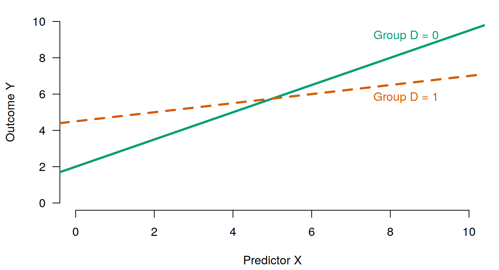
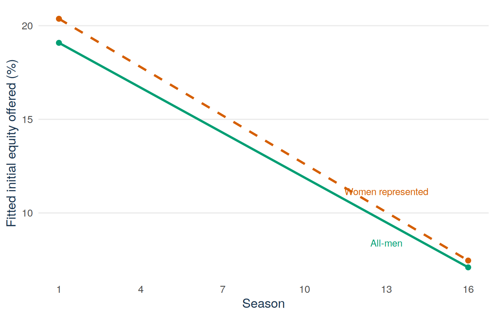
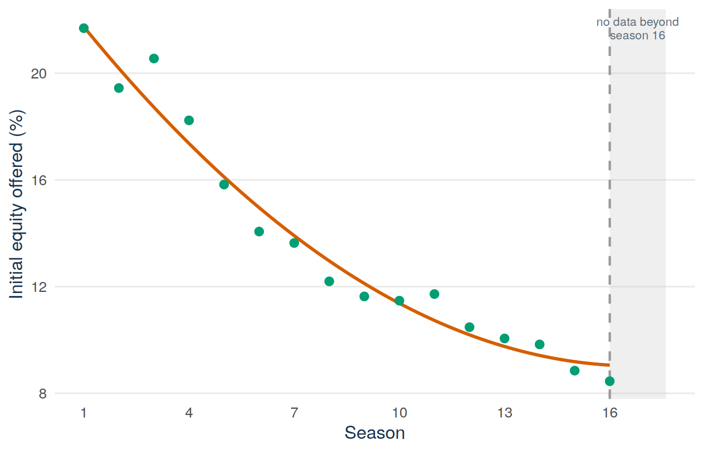

sharks <- read.csv("data/shark_tank_teaching.csv", stringsAsFactors = FALSE)
sharks$ask_1k <- sharks$ask_amount_usd / 1000
known_gender <- subset(sharks, pitcher_gender_group != "unknown")
known_gender$women <- as.integer(
known_gender$pitcher_gender_group %in% c("all_women", "mixed")
)
known_gender$season_c <- known_gender$season - mean(known_gender$season)
plot(equity_offered_pct ~ season, data = known_gender,
pch = 16, col = "grey80")
abline(lm(equity_offered_pct ~ season,
data = subset(known_gender, women == 0)),
col = "#0072B2", lwd = 3)
abline(lm(equity_offered_pct ~ season,
data = subset(known_gender, women == 1)),
col = "#D55E00", lwd = 3)Lecture 6: Interactions and curvature
By the end of Lecture 6, you can
- read a two-lines picture as four numbers: two intercepts and two slopes;
- explain an interaction coefficient as a difference in slopes, with units;
- interpret lower-order terms in a model containing an interaction, and use centering to make them meaningful;
- report a non-significant interaction without overclaiming in either direction;
- apply the hierarchy principle and the
x * zformula shorthand; - fit a quadratic term, explain why it is still linear regression, and compute a fitted change without reading coefficients separately;
- test added terms with a partial F-test and refuse to extrapolate a polynomial.
Driving question
“On average” can hide the interesting part: an effect may differ across groups, or bend as scale grows. Interactions and curvature are how a model is allowed to say so.
Is the downward season trend in equity offers the same for every team composition — and is the trend even a straight line?
Before class
Total preparation time: about 30 minutes.
Video preparation (15 minutes)
Watch Stanford Statistical Learning 3.5 Extensions of the Linear Model and 7.1 Polynomials and Step Functions. Focus on why an interaction changes a slope and why a polynomial remains a linear regression model in its coefficients. All links are also listed in the External Video Guide.
Derive the two lines (5 minutes). In the model \(Y=\beta_0+\beta_1X+\beta_2D+\beta_3XD+\varepsilon\) with \(D\in\{0,1\}\), write the fitted line for \(D=0\) and for \(D=1\).
Check your preparation
For \(D=0\): \(E[Y\mid X,D=0]=\beta_0+\beta_1X\). For \(D=1\): \(E[Y\mid X,D=1]=(\beta_0+\beta_2)+(\beta_1+\beta_3)X\). Setting \(D=1\) shifts the intercept by \(\beta_2\) and the slope by \(\beta_3\).
Predict (2 minutes). Answer the one-click Mentimeter question posted on Canvas before you come to class: how many separate numbers do you need to fully describe a picture of two straight lines with different slopes? Commit to an answer; the lecture resolves it.
R warm-up (8 minutes). Build the analysis variables — the same known_gender subset as Lecture 5, plus a women indicator and a centred season — fit one equity-on-season line per group, and bring the plot:
If products, powers, or centering are not secure, review Mathematics Refresher: products, powers, and centering.
In class
The session opens with the usual four-minute entry quiz on the prep videos, then turns to the driving question — with the class’s own warm-up two-line plots on screen.
Stanford explanations (review): 3.5 Extensions of the Linear Model and 7.1 Polynomials and Step Functions.
The picture before the formula
Every model so far forced all groups to share one slope. Lecture 5 let the heights differ by group; today the slopes get the same freedom. Start with the picture, not the algebra:
See the drawing code (optional, not exam material)
old_par <- par(no.readonly = TRUE)
par(mar = c(4.2, 4.2, 1, 1), las = 1)
plot(NA, xlim = c(0, 10), ylim = c(0, 10), bty = "n",
xlab = "Predictor X", ylab = "Outcome Y")
abline(a = 2, b = 0.75, col = "#009E73", lwd = 3)
abline(a = 4.5, b = 0.25, col = "#D55E00", lwd = 3, lty = 2)
text(8.4, 2 + 0.75 * 8.4 + 0.9, "Group D = 0", col = "#009E73")
text(8.4, 4.5 + 0.25 * 8.4 - 0.8, "Group D = 1", col = "#D55E00")
par(old_par)
This resolves the prediction from your prep: four numbers — an intercept and a slope for each line. The interaction model is nothing more than a reparameterisation of those four numbers:
\[ E[Y\mid X,D] =\beta_0+\beta_1X+\beta_2D+\beta_3XD. \]
Map each coefficient to a feature of the picture:
- \(\beta_0\): where the \(D=0\) line meets the vertical axis;
- \(\beta_1\): the slope of the \(D=0\) line;
- \(\beta_2\): how much higher the \(D=1\) line starts;
- \(\beta_3\): how much steeper the \(D=1\) line runs.
Or as the two-row table that your prep derivation produced:
| Group | Intercept | Slope |
|---|---|---|
| \(D=0\) | \(\beta_0\) | \(\beta_1\) |
| \(D=1\) | \(\beta_0+\beta_2\) | \(\beta_1+\beta_3\) |
Four coefficients, four picture features. When \(\beta_3=0\) the lines are parallel and the model collapses to Lecture 5’s common-slope dummy model.
The interaction coefficient is a difference in slopes
In the additive model the slope of \(X\) is the same at every value of the other predictor. Adding the product \(XD\) lets it depend: the change in the conditional mean for a one-unit increase in \(X\) is
\[ \beta_1+\beta_3D, \]
so \(\beta_3\) is a difference in slopes, not a standalone effect. Its units combine the variables. If \(X\) is measured in seasons and \(D\) is a group indicator, \(\beta_3\) is measured in outcome units per season, between the groups — here, equity percentage points per season, group minus reference group. (The same algebra works when both variables are quantitative: the slope of \(X\) becomes \(\beta_1+\beta_3Z\), a slope that slides with \(Z\).)
Centering. Once \(XD\) is in the model, \(\beta_2\) compares the groups at \(X=0\) — for us, the unobserved Season 0. Replacing season with
\[ season\_c = season - \overline{season} \]
moves that comparison to the average season (about 8.8). Centering changes exactly one kind of thing and cannot change another:
- it changes the meaning (and value) of lower-order terms — the intercept and the group coefficient now refer to the average season;
- it cannot change the fitted values, the residuals, \(R^2\), or the interaction estimate itself. The lines are the same lines; only the place where we read off their vertical gap has moved.
Check: which printed numbers change when season is centred?
The intercept and the women coefficient (lower-order terms) change; the interaction coefficient, the ask_1k coefficient, all fitted values, and \(R^2\) do not. The after-class practice has you verify this in R.
The Shark Tank interaction model
Now the driving question’s first half. For this lecture, women = 1 means the source classifies the presenting team as all-women or mixed; women = 0 means all-men. It is a broader split than Lecture 5’s three-category factor, it does not measure a share of women or the full venture team, and the seven unknown records are excluded as before. The whole setup is visible — it is the warm-up code:
sharks <- read.csv("data/shark_tank_teaching.csv", stringsAsFactors = FALSE)
sharks$ask_1k <- sharks$ask_amount_usd / 1000
known_gender <- subset(sharks, pitcher_gender_group != "unknown")
known_gender$women <- as.integer(
known_gender$pitcher_gender_group %in% c("all_women", "mixed")
)
known_gender$season_c <- known_gender$season - mean(known_gender$season)
interaction_model <- lm(
equity_offered_pct ~ season_c * women + ask_1k,
data = known_gender
)
summary(interaction_model)
Call:
lm(formula = equity_offered_pct ~ season_c * women + ask_1k,
data = known_gender)
Residuals:
Min 1Q Median 3Q Max
-15.871 -4.742 -1.290 3.412 82.689
Coefficients:
Estimate Std. Error t value Pr(>|t|)
(Intercept) 13.6247907 0.3354522 40.616 < 2e-16 ***
season_c -0.7993817 0.0663226 -12.053 < 2e-16 ***
women 0.8069665 0.4117061 1.960 0.0502 .
ask_1k -0.0026776 0.0005834 -4.590 4.83e-06 ***
season_c:women -0.0614594 0.0955667 -0.643 0.5203
---
Signif. codes: 0 '***' 0.001 '**' 0.01 '*' 0.05 '.' 0.1 ' ' 1
Residual standard error: 7.62 on 1429 degrees of freedom
Multiple R-squared: 0.1894, Adjusted R-squared: 0.1871
F-statistic: 83.47 on 4 and 1429 DF, p-value: < 2.2e-16Read the two group slopes off the two-row table, holding requested amount fixed. For all-men teams (women = 0), the fitted season slope is about \(-0.799\) percentage points per season. For teams with women represented, it is
\[ -0.799+(-0.061)=-0.861 \text{ percentage points per season.} \]
The interaction estimate is \(-0.061\) equity percentage points per season (between groups), with p-value about 0.520. Read that carefully, in both directions: this model does not provide evidence that the season trend differs between these two broad source-defined groups. It also does not prove the slopes are identical — the estimate is imprecise (SE about 0.096), and the data are consistent with anything from a moderately steeper to a moderately flatter trend for teams with women represented. No evidence of different trends is not proof of equal trends.
See the R code for this figure
library(ggplot2)
sharks <- read.csv("data/shark_tank_teaching.csv", stringsAsFactors = FALSE)
sharks$ask_1k <- sharks$ask_amount_usd / 1000
known_gender <- subset(sharks, pitcher_gender_group != "unknown")
known_gender$women <- as.integer(
known_gender$pitcher_gender_group %in% c("all_women", "mixed")
)
known_gender$season_c <- known_gender$season - mean(known_gender$season)
interaction_model <- lm(
equity_offered_pct ~ season_c * women + ask_1k,
data = known_gender
)
season_grid <- 1:16
ask_bar <- mean(known_gender$ask_1k)
newdat <- expand.grid(season = season_grid, women = c(0, 1))
newdat$season_c <- newdat$season - mean(known_gender$season)
newdat$ask_1k <- ask_bar
newdat$fit <- predict(interaction_model, newdata = newdat)
newdat$group <- ifelse(newdat$women == 1, "Women represented", "All-men")
fit_men_13 <- newdat$fit[newdat$women == 0 & newdat$season == 13]
fit_women_13 <- newdat$fit[newdat$women == 1 & newdat$season == 13]
ggplot(newdat, aes(x = season, y = fit,
colour = group, linetype = group)) +
geom_line(linewidth = 1.1) +
geom_point(data = subset(newdat, season %in% c(1, 16)), size = 2.2) +
annotate("text", x = 13, y = fit_women_13 + 1.1,
label = "Women represented",
colour = "#D55E00", size = 3.4) +
annotate("text", x = 13, y = fit_men_13 - 1.1,
label = "All-men",
colour = "#009E73", size = 3.4) +
scale_colour_manual(values = c("All-men" = "#009E73",
"Women represented" = "#D55E00"),
guide = "none") +
scale_linetype_manual(values = c("All-men" = "solid",
"Women represented" = "dashed"),
guide = "none") +
scale_x_continuous(breaks = seq(1, 16, by = 3)) +
labs(x = "Season", y = "Fitted initial equity offered (%)") +
theme_minimal(base_size = 13) +
theme(
panel.grid.minor = element_blank(),
panel.grid.major.x = element_blank(),
plot.caption = element_text(colour = "#5B6976"),
axis.title = element_text(colour = "#17324D")
)
Graph the model whenever an interaction is present: in Figure 23.2 the two nearly-parallel lines are the finding, and neither \(\beta_1\) nor \(\beta_2\) alone is an overall effect once \(XD\) is in the model.
The hierarchy principle and the * shorthand
If a model contains \(XD\), ordinarily retain both \(X\) and \(D\), even when a lower-order term is not individually significant. The lower-order terms define the two lines whose difference the interaction describes; dropping one forces the lines through an arbitrary common feature and turns the interaction coefficient into something unintended. R’s formula shorthand respects the hierarchy automatically:
lm(y ~ x * z, data = df) # x * z expands to x + z + x:zBefore the break, the parallel that organises the whole lecture: block 1 let the slope differ by group; block 2 lets the slope differ along \(x\) itself. Both are the same move — feeding least squares a new constructed column (a product, a square) and reading the fitted combination.
Curvature: polynomials are still linear regression
Is the season trend even a straight line? A quadratic conditional mean
\[ E[Y\mid X=x]=\beta_0+\beta_1x+\beta_2x^2 \]
is curved in \(x\) but linear in the unknown coefficients \(\beta_0,\beta_1,\beta_2\) — and that is all lm() requires. The square is just another constructed predictor column.
What changes is how to read the output. The slope is no longer one number: moving from \(x\) to \(x+1\) changes the fitted mean by
\[ (\beta_1(x+1)+\beta_2(x+1)^2) - (\beta_1x+\beta_2x^2) =\beta_1+\beta_2(2x+1), \]
a change that depends on where you start. The standing rule: never read \(\beta_1\) alone while \(x^2\) is in the model. Compute fitted changes or graph the curve.
linear_season <- lm(equity_offered_pct ~ season + ask_1k, data = sharks)
poly_season <- lm(equity_offered_pct ~ season + I(season^2) + ask_1k,
data = sharks)
summary(poly_season)$coefficients Estimate Std. Error t value Pr(>|t|)
(Intercept) 24.171680818 0.8205664983 29.457309 1.332051e-149
season -1.713233277 0.2056686354 -8.330066 1.862369e-16
I(season^2) 0.051034200 0.0113694269 4.488722 7.737227e-06
ask_1k -0.002710806 0.0005740121 -4.722559 2.556506e-06The I() wrapper tells R to square arithmetically rather than read ^ as formula syntax. The fitted coefficients are \(b_1 \approx -1.713\) and \(b_2 \approx 0.051\): a steep early decline that flattens season by season.
Example 23.1 (Worked example: the fitted change from Season 5 to Season 6) Holding requested amount fixed, the fitted change from season \(x\) to season \(x+1\) is \(b_1+b_2(2x+1)\). From Season 5 to Season 6, \(x = 5\):
\[ b_1+b_2(2\times5+1) =-1.713+0.051\times11 =-1.713+0.561 \approx-1.15 \text{ percentage points.} \]
Reading \(b_1=-1.713\) alone would overstate the drop by half a point — that number is the fitted change at the meaningless \(x=0\), not a constant slope. Verification in R, as a difference of two fitted values:
b <- coef(poly_season)
unname(b["season"] + b["I(season^2)"] * (2 * 5 + 1))[1] -1.151857Is the curvature worth having? The partial F
The quadratic model and the linear model are nested — Lecture 5’s test applies directly to the one added term:
anova(linear_season, poly_season)Analysis of Variance Table
Model 1: equity_offered_pct ~ season + ask_1k
Model 2: equity_offered_pct ~ season + I(season^2) + ask_1k
Res.Df RSS Df Sum of Sq F Pr(>F)
1 1438 83493
2 1437 82338 1 1154.5 20.149 7.737e-06 ***
---
Signif. codes: 0 '***' 0.001 '**' 0.01 '*' 0.05 '.' 0.1 ' ' 1The partial F-test for adding I(season^2) gives \(F \approx 20.1\) with p-value below 0.001 in the classical model: the curvature is statistically detectable. Detectable is not dramatic — adjusted \(R^2\) moves from about 0.186 to 0.196 — so also assess the substantive shape:
See the R code for this figure
library(ggplot2)
sharks <- read.csv("data/shark_tank_teaching.csv", stringsAsFactors = FALSE)
sharks$ask_1k <- sharks$ask_amount_usd / 1000
poly_season <- lm(equity_offered_pct ~ season + I(season^2) + ask_1k,
data = sharks)
season_means <- aggregate(equity_offered_pct ~ season, data = sharks, mean)
curve_data <- data.frame(season = seq(1, 16, length.out = 200),
ask_1k = mean(sharks$ask_1k))
curve_data$fit <- predict(poly_season, newdata = curve_data)
ggplot(season_means, aes(x = season, y = equity_offered_pct)) +
annotate("rect", xmin = 16, xmax = 17.6, ymin = -Inf, ymax = Inf,
fill = "grey75", alpha = 0.25) +
geom_vline(xintercept = 16, colour = "grey60",
linetype = "dashed", linewidth = 0.8) +
geom_line(data = curve_data, aes(x = season, y = fit),
colour = "#D55E00", linewidth = 1.1) +
geom_point(size = 2.6, colour = "#009E73") +
annotate("text", x = 16.8, y = max(season_means$equity_offered_pct),
label = "no data beyond\nseason 16", colour = "#5B6976",
size = 3, lineheight = 0.95) +
scale_x_continuous(breaks = seq(1, 16, by = 3)) +
coord_cartesian(xlim = c(1, 17.6)) +
labs(x = "Season", y = "Initial equity offered (%)") +
theme_minimal(base_size = 13) +
theme(
panel.grid.minor = element_blank(),
panel.grid.major.x = element_blank(),
plot.caption = element_text(colour = "#5B6976"),
axis.title = element_text(colour = "#17324D")
)
The points in Figure 23.3 are raw season means; the curve holds requested amount at its sample mean. Do not extrapolate the quadratic beyond Seasons 1–16. The fitted parabola bottoms out just past Season 16 and would climb steeply afterwards — an artefact of the functional form, not a forecast. Polynomials can turn sharply the moment they leave the data.
What flexible terms can and cannot repair
Interactions and polynomials make the conditional mean more flexible — and that is all they do. They repair nothing about the design: dependence across rows, selection into broadcast, measurement error, unequal error variance, and unmeasured confounding all pass through untouched. Nor is flexibility free: every added term spends precision and invites overfitting if terms are added because they are significant rather than because a substantive question asks for them. Choose terms from the question — “could this trend differ by group?”, “could this relationship bend?” — inspect the implied predictions, and report combined effects, never single coefficients ripped out of a product or a polynomial.
Answering the driving question
Two halves, two verdicts, both with limits. Same trend for every composition? The estimated slope difference is \(-0.061\) percentage points per season (p \(\approx\) 0.52): no detectable difference between the source-defined groups — and no proof of equality, since the estimate is imprecise. A straight line? Not quite: the quadratic term is detectable (partial \(F \approx 20.1\), p \(<\) 0.001), and the fitted decline flattens from about \(-1.56\) points per season early on to about \(-0.64\) around Season 10 — a mild, data-supported curvature valid only inside Seasons 1–16, in a model that remains observational throughout.
Next: Tutorial 2 rehearses Lectures 4–6 in exam format and closes with the integrated modelling task: one full analysis from research question to a 150-word conclusion — outcome, predictors, an extension a real question motivates, and the caveat that headlines it. That is a rehearsal of exactly what the exam, and later your thesis, will ask of you.
After class
Total practice time: about 65 minutes.
Retrieval (10 minutes)
- What does an interaction coefficient measure, and what are its units in the season-by-group model?
- Why centre a predictor before interacting it, and what can centering never change?
- State the hierarchy principle.
- Why is a quadratic model still a linear regression model?
- Why should a polynomial be graphed, and never extrapolated casually?
Check your answers
- How one predictor’s slope differs with the other predictor — here, equity percentage points per season, as a difference between groups.
- To make lower-order terms refer to a meaningful value such as the sample mean; it never changes fitted values, residuals, \(R^2\), or the interaction estimate.
- Retain the component lower-order terms whenever their interaction or higher-order term is in the model.
- It is linear in the unknown coefficients; the squared column is just another constructed predictor.
- No single coefficient is the slope, so only fitted values or the curve show the model’s claim — and outside the observed range the curve can turn sharply with no data support.
Centering verification (10 minutes)
Fit the interaction model with and without centering season. Verify that the fitted values and the interaction coefficient are unchanged, and report which coefficients do change.
Check your answer
sharks <- read.csv("data/shark_tank_teaching.csv", stringsAsFactors = FALSE)
sharks$ask_1k <- sharks$ask_amount_usd / 1000
known_gender <- subset(sharks, pitcher_gender_group != "unknown")
known_gender$women <- as.integer(
known_gender$pitcher_gender_group %in% c("all_women", "mixed")
)
known_gender$season_c <- known_gender$season - mean(known_gender$season)
uncentered <- lm(equity_offered_pct ~ season * women + ask_1k,
data = known_gender)
centered <- lm(equity_offered_pct ~ season_c * women + ask_1k,
data = known_gender)
all.equal(fitted(uncentered), fitted(centered))[1] TRUEc(uncentered = unname(coef(uncentered)["season:women"]),
centered = unname(coef(centered)["season_c:women"])) uncentered centered
-0.06145941 -0.06145941 c(women_uncentered = unname(coef(uncentered)["women"]),
women_centered = unname(coef(centered)["women"]))women_uncentered women_centered
1.3465150 0.8069665 The fitted values agree and both interaction estimates are about \(-0.061\). The lower-order women coefficient changes from about \(1.35\) (a comparison at the unobserved Season 0) to about \(0.81\) (a comparison at the average season, about 8.8); the intercept changes correspondingly. Centering moved the reading point, not the lines.
From worked to faded: a quadratic change (15 minutes)
Re-read the worked Season 5 to 6 calculation (Example 23.1). Then compute the fitted change from Season 10 to Season 11 in the same model.
Step 1 (given). The recipe is \(b_1+b_2(2x+1)\) with \(x=10\), so the multiplier on \(b_2\) is \(21\).
Step 2 (you). Plug in \(b_1\approx-1.713\) and \(b_2\approx0.051\).
Step 3 (you). Compare the result with the Season 5 to 6 change and state in one sentence what the comparison shows about the trend.
Check your answer
\(-1.713+0.051\times21\approx-1.713+1.072\approx-0.64\) percentage points (exactly: \(b_1+21b_2=-0.642\)). The drop per season has shrunk from about \(-1.15\) (Seasons 5–6) to about \(-0.64\) (Seasons 10–11): the decline flattens in later seasons, which is precisely what a positive \(b_2\) says.
Then unassisted, with new coefficients. A model of monthly revenue (€1,000s) on shop age \(x\) (years) reports \(\widehat Y = 40 - 2.00x + 0.060x^2\).
- Compute the fitted change from age 3 to age 4 and from age 8 to age 9.
- A colleague reports “revenue falls €2,000 per year of age.” Correct the sentence.
- In \(Y=10+2X+3D-0.5XD\), write both group lines and interpret the interaction coefficient.
Check your answers
- Age 3 to 4: \(-2.00+0.060(2\times3+1)=-2.00+0.42=-1.58\), about \(-€1{,}580\). Age 8 to 9: \(-2.00+0.060\times17=-0.98\), about \(-€980\).
- \(-2.00\) is the fitted change at age 0 only. With \(x^2\) in the model the change depends on age: about \(-1.58\) at age 3, about \(-0.98\) at age 8 — the decline weakens as shops age.
- For \(D=0\): \(\widehat Y=10+2X\). For \(D=1\): \(\widehat Y=13+1.5X\). The interaction \(-0.5\) says the \(D=1\) slope is 0.5 outcome units per unit of \(X\) smaller than the \(D=0\) slope.
Cumulative mini-task (15 minutes)
In Lecture 4 you wrote a paragraph connecting the Lecture 2 diagnostics to the three-predictor equity model. Extend that paragraph by one argument: propose either an interaction or a polynomial term for that model, state the substantive question that motivates it, and say how you would test whether the term earns its place.
Check a model answer
A defensible extension: “The season decline need not be linear — early-seasons novelty and later-seasons professionalisation suggest a flattening trend, so I would add I(season^2). The term is motivated by the shape question, not by hunting significance. I would test it with a partial F-test against the nested linear model on the same rows (here \(F\approx20.1\), p \(<\) 0.001), check that adjusted \(R^2\) improves, graph the fitted curve inside Seasons 1–16, and report fitted season-to-season changes rather than the raw season coefficient.” An interaction argument (for example season by gender group, testing whether the trend differs; \(F\approx0.41\), p \(\approx\) 0.52, so the term is not retained) is equally valid if it names the motivating question and the nested test.
Spaced review: one partial-F item from Lecture 5 (5 minutes)
Adding the two gender dummies to the season-and-ask model of equity reduced the residual sum of squares by 436.25 using 2 degrees of freedom, and the complete model left 82,792 on 1,429 degrees of freedom. Compute the partial F statistic and state the 5% conclusion.
Check your answer
\(F=(436.25/2)/(82{,}792/1{,}429)=218.1/57.9\approx3.76\), with p \(\approx\) 0.023. At 5%, the two category terms are jointly useful in that specification — even though the mixed dummy’s own t-test is far from significant, which is the standing lesson that joint and individual tests answer different questions.
Worked exam interpretation (5 minutes)
Question (mock exam Question 5 pattern). A model of venture sales growth (percentage points) on marketing spending (€10,000s), an online-only indicator, and their interaction reports spending 1.20, online 2.00, spending:online -0.50. A student writes: “Spending raises growth by 1.2 percentage points per €10,000 for all ventures.” Correct the sentence.
Check a model answer
Two repairs. First, with the interaction present, 1.20 is the fitted spending slope for offline ventures only (online = 0); for online-only ventures the slope is \(1.20-0.50=0.70\) percentage points per €10,000 — there is no single all-venture slope. Second, “raises” claims causation; these are fitted associations among sampled ventures, holding the other included terms fixed, with no design that identifies an effect of spending.
Make it yours (5 minutes)
Utility: two sentences
Think of your EiA3 venture — or any business you know well. Name one relationship in its data whose slope plausibly depends on something else (price sensitivity differing by segment, campaign effect differing by channel, growth flattening with scale), and write two sentences: first state the interaction or quadratic term you would add and the substantive question behind it, then say what a non-significant result would — and would not — tell you. There is no wrong answer; the point is letting the question, not the software, choose the term.
See an example, then write your own
Take a student-run campus meal-prep box venture. “I would add an ad-spend × exam-week interaction, because the substantive question is whether ads only work when students are actually on campus. A non-significant interaction would mean no evidence the slopes differ — not proof that exam weeks make no difference.”
You can discuss this task — and any other task in this chapter — with Tilly, the course AI assistant on Canvas: ask it to read your two sentences and check whether you treated “no evidence of a difference” as “proof of no difference.”
Continue to Tutorial 2: Multiple regression and extensions.
Formula sheet: Lecture 6 formulas.
For a more formal treatment, see James et al., An Introduction to Statistical Learning, 2nd ed., Section 3.3.2 and Sections 3.6.4–3.6.6, and Nieuwenhuis, Statistical Methods for Business and Economics, Chapter 21.